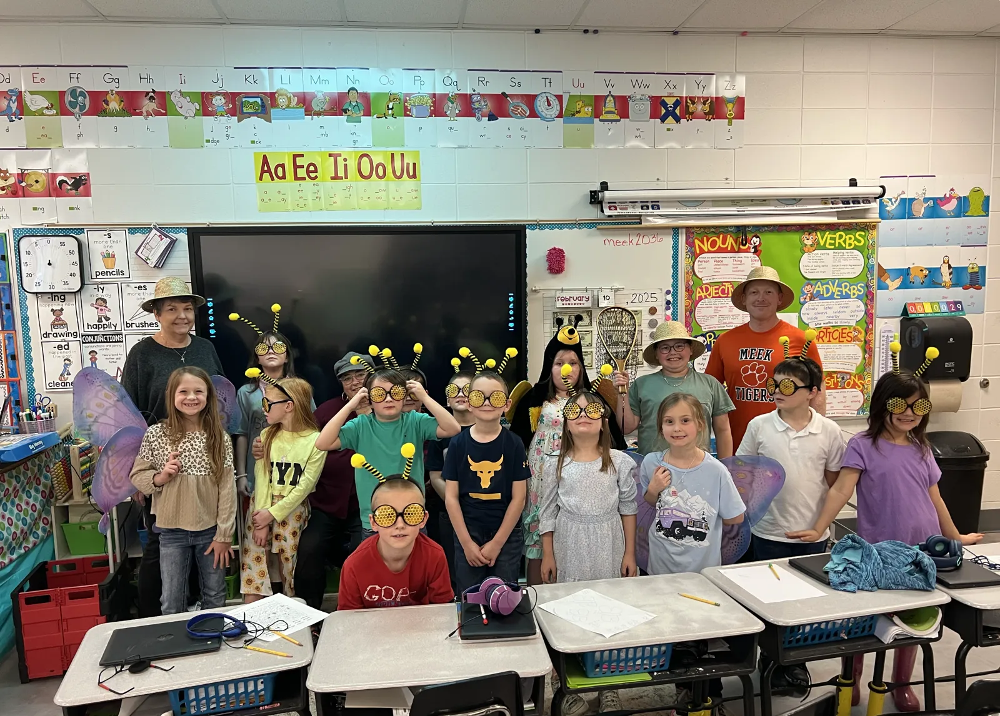
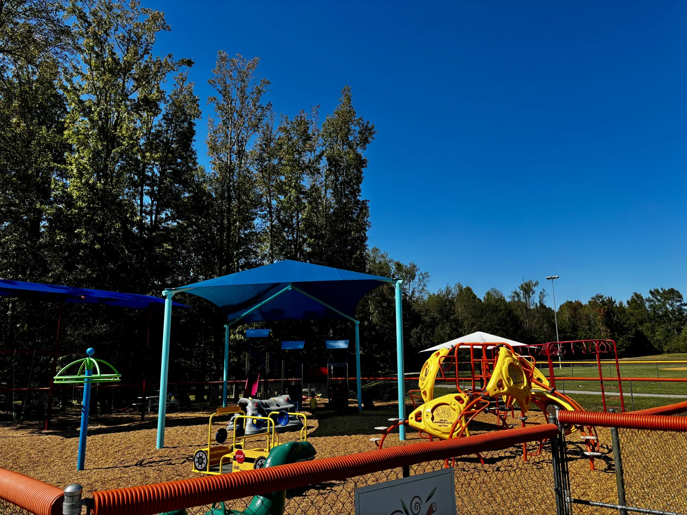
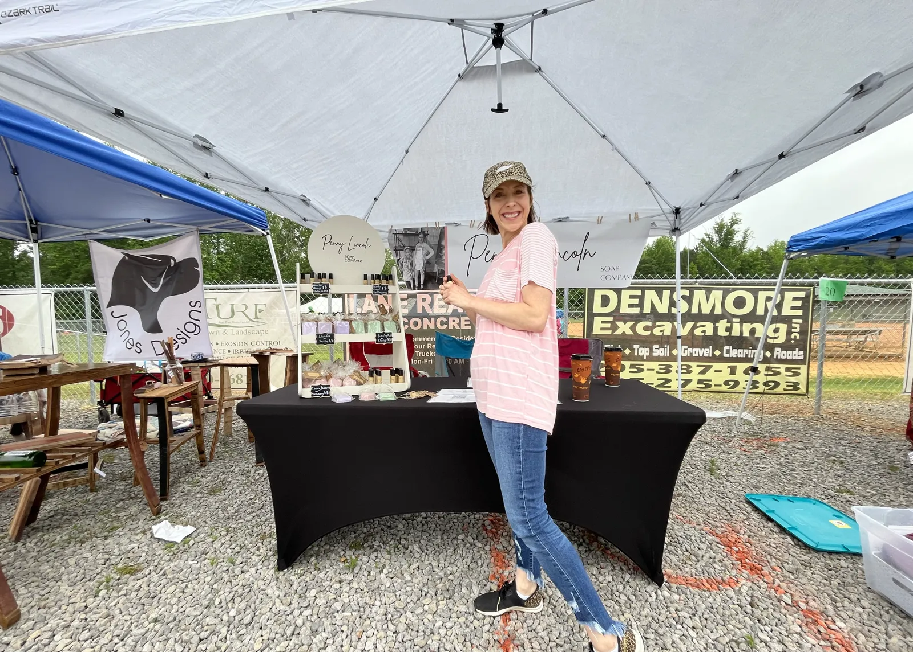

01
Education & Literacy
School partnerships, scholarships, reading programs and enrichment opportunities.
Explore education →ARLEY WOMEN'S CLUB · EST. 1972
Neighbors working together to strengthen Arley through education, service, shared spaces, local giving and community traditions.
AWC brings volunteers, funding and community partnerships together around the places and people that make Arley stronger.

School partnerships, scholarships, reading programs and enrichment opportunities.
Explore education →
Supporting neighbors, local organizations and needs that matter close to home.
See community work →
Hamner Park, recycling, outdoor education and stewardship of shared spaces.
Visit park initiatives →
Community traditions and fundraising that turn celebration into local impact.
Explore Arley Day →MORE THAN FIVE DECADES OF SERVICE
For generations, members of the Arley Women's Club have turned local needs into action — helping build community spaces, supporting students and teachers, strengthening local organizations and creating traditions that bring people together.
Our story →
ARLEY'S SIGNATURE COMMUNITY CELEBRATION
The festival deserves more than a maze of forms. The redesigned site gives visitors one clear place for event details, vendors, parade and car show information, registrations, sponsors and updates.
COME BE PART OF IT
Book club, bridge, watercolor, walking groups, community events and seasonal programs — easier to discover and easier to keep current.
Move, connect and enjoy the community with friends.
A relaxed creative gathering for members of all experience levels.
Good books, good conversation and neighbors around the table.
One clear calendar for activities, meetings and community events.
KEEP THE GOOD GOING
Donations, sponsors and volunteers help AWC continue investing in Arley's schools, library, parks, first responders and community programs.
Growing good,
right here in Arley.
MEMBERSHIP
Meet people. Serve where you care most. Help shape what comes next for Arley.
Join AWC →FOR CURRENT MEMBERS
A cleaner member dashboard can bring the directory, calendars, minutes, financial reports, documents, dues and profile tools together in one place.
Member login →